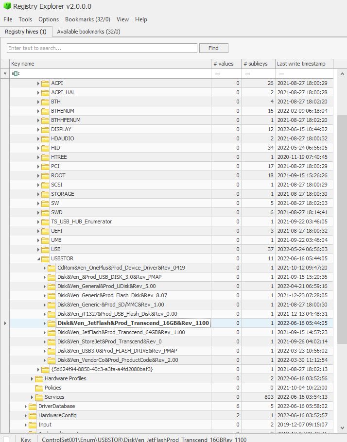
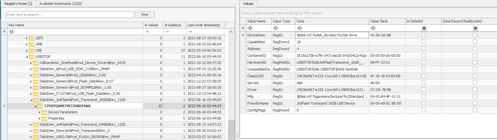
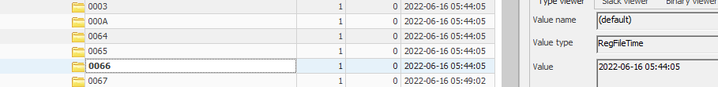
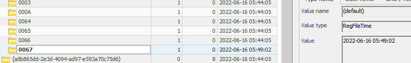
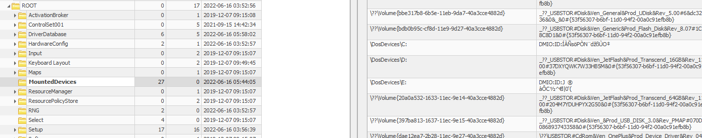
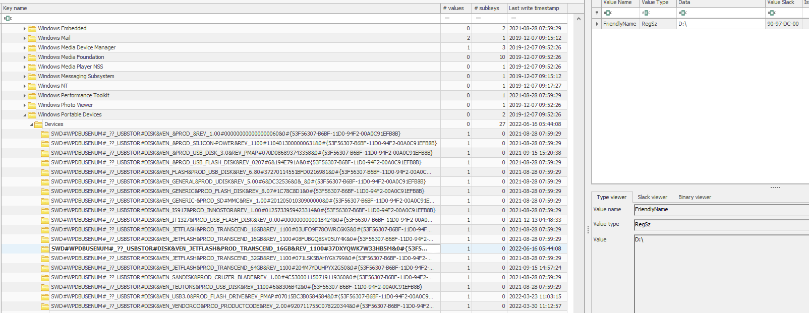

1/ Use Case
An incident has been created manually to investigate on a USB key infection. A system has been detected having a Raspberry Robin infection. The goal of this case is to find the USB key that was the source of the infection.
2/ Investigation
Whenever a USB key is plugged in a system, a registry key named USBSTOR is created on the SYSTEM registry hive.
HKEY_LOCAL_MACHINE\SYSTEM\CurrentControlSet\Enum\USBSTOR
The registry files are found on the following path : C:\Windows\System32\config, so the files that correspond to SYSTEM, SOFTWARE, SECURITY hives can be found in this path. Registry explorer from Eric Zimmerman is a great tool to navigate into those file.  The incident happened on 2022-06-16 05:44:40Z, which means that the USB key has to be plugged before or at the incident time. Expanding the folder and clicking on the first sub folder, we manage to extract some interesting information regarding the USB key.  Serial # : 37DXYQWK7W33HB5M
USB key name : JetFlash Transcend 16GB
USB DeviceCapability : 16 GB
GUID: {4d36e967-e325-11ce-bfc1-08002be10318}
Service : disk
On the registry, we can also get the information about when the USB key has been plugged in the computer for the first time.
On the subfolder 'Properties' find the key 64 to get the date of when the USB key has been plugged in the computer.
 First time connected : 2022-06-16 05:44:05Z
First time connected : 2022-06-16 05:44:05Z Find the key 66 to get the information when the USB key last connected to the laptop.  Last time connected : 2022-06-16 05:44:05Z
Find the key 67 to get the information about when was the last time the USB key has been removed.  Last time removed : 2022-06-16 05-49-02Z
At the Mounted Devices, you can also get the drive letter.  We see that the D drive letter was associated to the USB key JetFlash Transcend 16GDB&Rev_100. In the value you also find the serial number (37DXYQWK7W33HB5M)
To find the Drive Letter, it is also possible to go to the following registry key :
HKLM\SOFTWARE\Microsoft\Windows Portable Devices\Devices
Look for USB key name and the serial number that you've got from USBSTOR, clicking on the registry key, the drive letter will be shown
